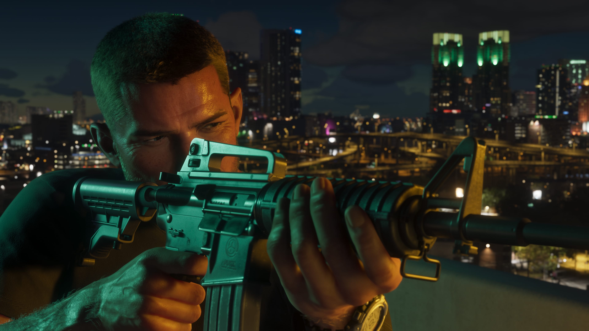

Lucia Caminos
Parceira de Jason e coprotagonista de GTA VI. Os dois precisam confiar um no outro depois que um serviço dá errado.
Conhecer Lucia

Jason Duval é um dos protagonistas de Grand Theft Auto VI. Depois de uma juventude problemática e de uma passagem pelo Exército, ele acabou nas Leonida Keys trabalhando para traficantes locais.
Sua vida muda de direção quando Lucia Caminos entra em cena. Os dois ocupam o centro da história de GTA VI e precisam confiar um no outro depois que um serviço aparentemente simples dá errado.
Jason cresceu cercado por golpistas e criminosos. Depois de uma adolescência problemática, entrou para o Exército tentando encontrar uma direção diferente para sua vida.
A experiência militar, porém, não o afastou definitivamente do mundo do crime. Mais tarde, Jason acabou nas Leonida Keys e passou a trabalhar para traficantes locais.
O material oficial apresenta um personagem que já conhece de perto esse ambiente quando os acontecimentos centrais de GTA VI começam.
Jason parece desejar uma vida mais simples, mas suas escolhas e suas conexões continuam levando-o para situações cada vez mais perigosas.


Antes dos acontecimentos centrais de GTA VI, Jason já possui conexões importantes nas Leonida Keys.
Uma delas é Brian Heder, um veterano traficante da região. Jason vive gratuitamente em uma das propriedades de Brian em troca de ajudá-lo com alguns serviços locais.
Jason também mantém amizade com Cal Hampton, outro associado de Brian.
Brian e Cal formam parte do círculo que ajuda a estabelecer a vida de Jason nas Keys antes que sua história com Lucia ganhe proporções muito maiores.
Jason e Lucia estão no centro da narrativa de Grand Theft Auto VI.
Segundo a apresentação oficial do jogo, um serviço aparentemente simples dá errado e coloca os dois no lado mais sombrio do lugar mais ensolarado da América.
Eles acabam envolvidos em uma conspiração criminal que atravessa o estado de Leonida e precisam confiar um no outro mais do que nunca para conseguirem sair dessa situação.
A própria apresentação de Jason descreve a chegada de Lucia como algo que pode se tornar a melhor — ou a pior — coisa que já aconteceu com ele.
Conhecer Lucia Caminos
Personagens oficialmente associados a Jason nos materiais apresentados para Grand Theft Auto VI.
Parceira de Jason e coprotagonista de GTA VI. Os dois precisam confiar um no outro depois que um serviço dá errado.
Conhecer LuciaAmigo de Jason e associado de Brian. Cal prefere ficar em casa acompanhando comunicações da Guarda Costeira e suas próprias teorias.
Conhecer CalTraficante veterano das Leonida Keys. Jason vive em uma de suas propriedades em troca de ajudá-lo com alguns serviços locais.
Conhecer BrianImagens oficiais do personagem divulgadas para Grand Theft Auto VI.


Esta área reúne apenas informações apresentadas oficialmente para o personagem.
Jason é um dos protagonistas de GTA VI ao lado de Lucia Caminos.
Jason entrou para o Exército depois de uma adolescência problemática.
Jason acabou nas Keys trabalhando para traficantes locais.
Jason vive em uma propriedade de Brian e o ajuda com serviços locais.
Cal é amigo de Jason e também associado de Brian.
Jason e Lucia formam a dupla central da história apresentada para GTA VI.
As informações desta página são baseadas em materiais oficiais publicados pela Rockstar Games.
Página oficial de GTA VI com informações sobre o jogo, Jason, Lucia e Leonida.
Rockstar GamesApresentação oficial de Jason Duval e de outros personagens de Grand Theft Auto VI.
Ver fonte oficial